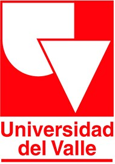

Cargo: Delegado.
Fecha: Septiembre 2021 — Junio 2022
Tipo de contrato: Prestación de servicios.
Funciones: Responsable de que se ejecute de manera adecuada las pruebas de estado Saber 3579, Saber 11, Saber TyT y Saber Pro.
Cumpliendo con actividades como manejo de personal, instalación de equipos, generación de informes y reporte de novedades durante las
pruebas saber.
Logros: Entrega de informes garantizando que la prueba se realice de acuerdo a los procedimientos establecidos por la organización contratante.
Jefe inmediato: Coordinador de nodo Cali
Cargo: Asistente graduado.
Fecha: Marzo 2019 — Marzo 2021
Tipo de contrato: Termino fijo.
Funciones: Actividades administrativas y desarrollo de proyecto de investigación.
Logros: Entrega de informes y análisis de resultados.
Jefe inmediato: Jeferson Piamba
Cargo: Auxiliar de ingeniería.
Fecha: Octubre 2017 — Abril 2018
Tipo de contrato: Prestación de servicios.
Funciones: Inspección de maquinaria por medio de ensayos no destructivos, utilizando medidor de espesor y tintas penetrantes.
Logros: Determinación de fallas en el material.
Jefe inmediato: Miguel Antonio Quiñones

Cargo: Monitor administrativo y de investigación.
Fecha: Febrero 2013 — Diciembre 2017
Tipo de contrato: Prestación de servicios.
Funciones: Actividades administrativas, manejo de maquinaria liviana y desarrollo de proyectos de investigación.
Logros: Entrega de documentación al día y divulgación de los resultados en eventos científicos.
Jefe inmediato: Hector Sanchez Stepha